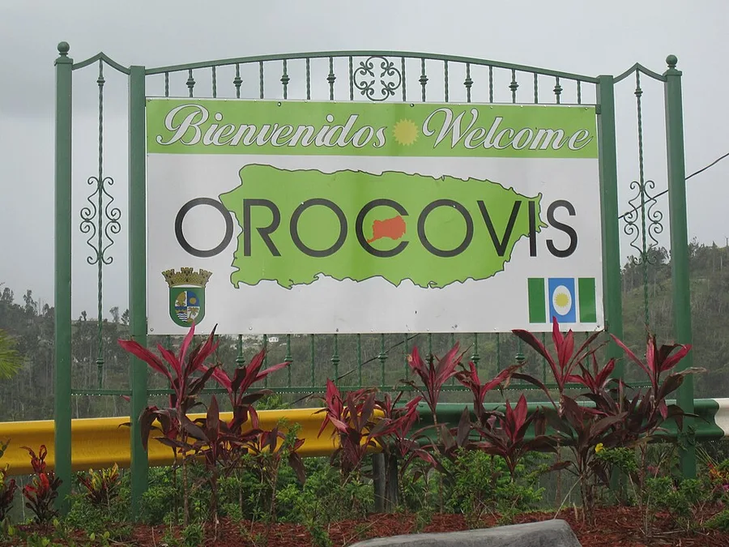

Herencia taína
El nombre Orocovis se relaciona con el cacique Orocobix, figura vinculada a la memoria indígena del área central.


La cultura de Orocovis se reconoce por su música, sus tradiciones religiosas, su orgullo montañoso y la presencia de artistas nacidos o criados en el pueblo. Por eso se le asocia con la música popular puertorriqueña y con la vida comunitaria de la Cordillera Central.
El nombre Orocovis se relaciona con el cacique Orocobix, figura vinculada a la memoria indígena del área central.
La bandera y el escudo integran colores y figuras que representan territorios, agricultura, ríos y el centro de Puerto Rico.

El lema de Corazón de Puerto Rico resume su localización y el orgullo de sus comunidades.
Orocovis ha sido cuna de figuras musicales como Bobby Valentín, Manny Manuel y Andrés Jiménez. Esta tradición musical conecta salsa, merengue y música jíbara con el carácter del pueblo.
Las fiestas patronales de San Juan Bautista, los encuentros comunitarios, la artesanía religiosa y la cocina de montaña forman parte de una cultura viva que se celebra durante todo el año.